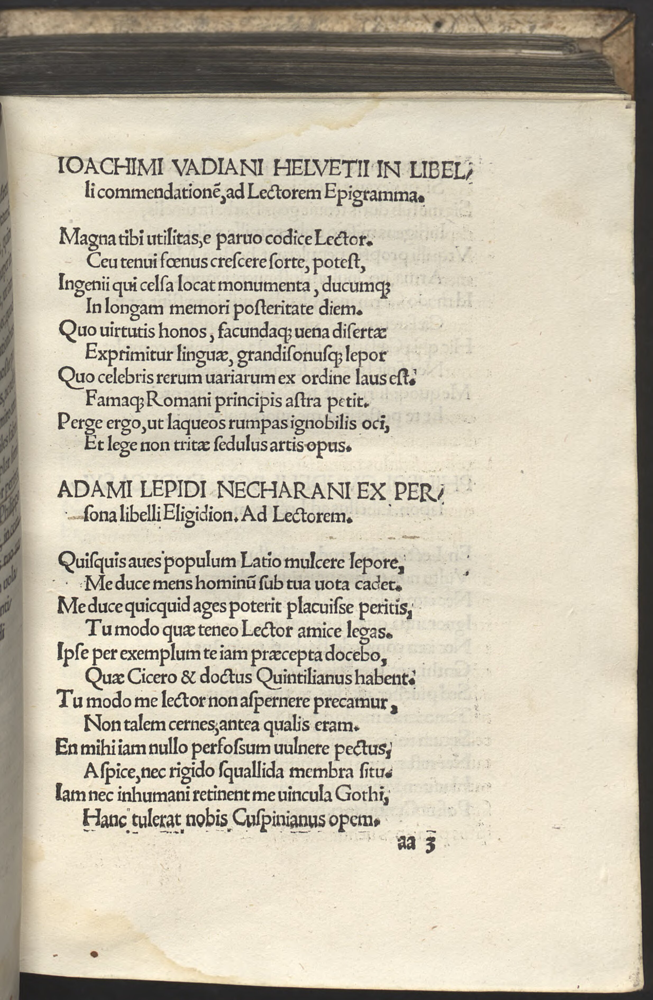
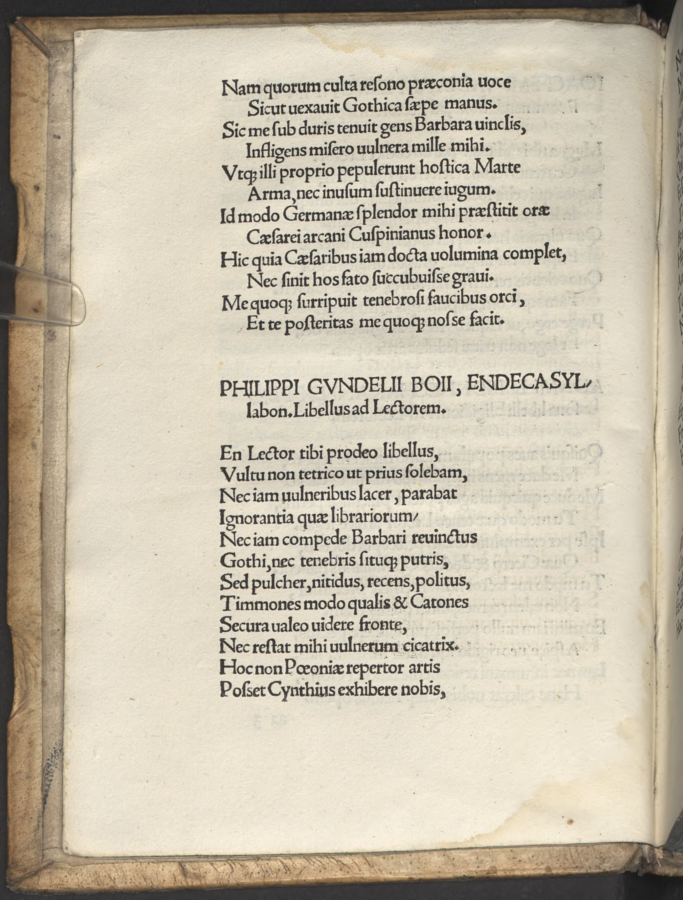

Spießheimer 5 (Adam Lepidus Necharanus)
Faksimile


Transkription
Adami Lepidi Necharani ex persona libelli Eligidion. Ad Lectorem.
Quisquis aves populum Latio mulcere lepore,
Me duce mens hominum sub tua vota cadet.
Me duce quicquid ages poterit placuisse peritis,
Tu modo quae teneo Lector amice legas.
Ipse per exemplum te iam praecepta docebo,
Quae Cicero et doctus Quintilianus habent.
Tu modo me lector non aspernere precamur,
Non talem cernes antea qualis eram.
En mihi iam nullo perfossum vulnere pectus,
Aspice, nec rigido squallida membra situ.
Iam nec inhumani retinent me vincula Gothi,
Hanc tulerat nobis Cuspinianus opem.
Nam quorum culta resono praeconia voce
Sicut vexavit Gothica saepe manus.
Sic me sub duris tenuit gens Barbara vinclis,
Infligens misero vulnera mille mihi.
Utque illi proprio pepulerunt hostica Marte
Arma, nec inusum sustinuere iugum.
Id modo Germanae splendor mihi praestitit orae
Caesarei arcani Cuspinianus honor.
Hic quia Caesaribus iam docta volumina complet,
Nec sinit hos fato succubuisse gravi.
Me quoque surripuit tenebrosi faucibus orci,
Et te posteritas me quoque nosse facit.
Übersetzung
Eine kleine Elegie des Adam Lepidus Necharanus aus der Rolle des Büchleins. An den Leser.
Wer auch immer <du bist, der> du begierig bist, das Volk mit lateinischer Anmut zu bezaubern, mit mir als Führer wird das Gemüt der Menschen deinen Wünschen entsprechend ausfallen. Was auch immer du mit mir als Führer tust, wird den Gelehrten gefallen können, wenn du nur liest, was ich beinhalte, geneigter Leser. Ich selbst werde dich schon durch ein Beispiel die Vorschriften lehren, die Cicero und der gelehrte Quintilian haben. Verschmähe mich nur nicht, Leser, ich bitte dich, du wirst vorher kein solches erblicken, wie ich es war. Sieh, die Brust ist mir mit keiner Wunde mehr durchbohrt, schau, und nicht strotzen die Glieder vor starrem Moder. Und nicht mehr halten mich die Fesseln des unmenschlichen Goten zurück, Spießheimer hatte uns diese Hilfe gebracht. Denn mit gebildeter Stimme lasse ich deren Lobpreisungen erklingen, so wie die gothische Schar <mich> häufig gequält hat. So hielt mich das barbarische Volk unter harten Ketten gefangen und fügte mir Armem tausend Wunden zu. Und wie jene in ihrem eigenen Krieg feindliche Waffen vertrieben, ertrugen sie auch kein ungenütztes Joch. Dies gewährte mir die Pracht der deutschen Küste, Spießheimer, die Ehre des kaiserlichen Geheimnisses. Weil dieser den Kaisern bereits gelehrte Werke vollendet und nicht zulässt, dass diese einem schlimmen Schicksal erliegen. Auch mich entriss er dem Schlund der finsteren Unterwelt und erreicht <so>, dass auch du, Nachwelt, mich kennt.
Metadaten
| Titel des Gedichts: | Adami Lepidi Necharani ex persona libelli Eligidion. Ad Lectorem. |
| Autor der Gedichts: | Adam Lepidus Necharanus (Adam Lepidus Necharanus) |
| Containerwerk: | Panaegyrici Variorum Autorum et Declamationes Nonnullae perquam eruditae hactenus non impressae, Wien 1513 |
| Autor des Containerwerks: | Johannes Spießheimer (Joannes Cuspinianus) |
| Gattung des Containerwerks: | Edition, Panegyricus, Deklamation |
| Erscheinungsjahr: | 1513 |
| Verschlagwortung: | Elegie, Buch, Rhetorik, Belehrung, Cicero, Quintilian, Rettung vor Vergessen, Frische, Neuheit, Goten, Nachruhm |